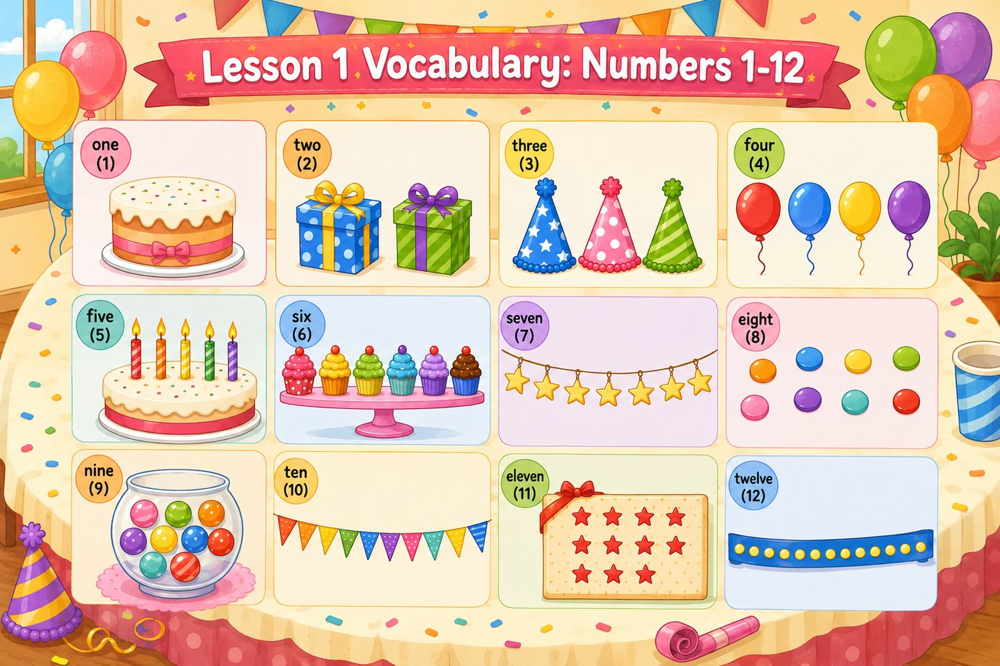
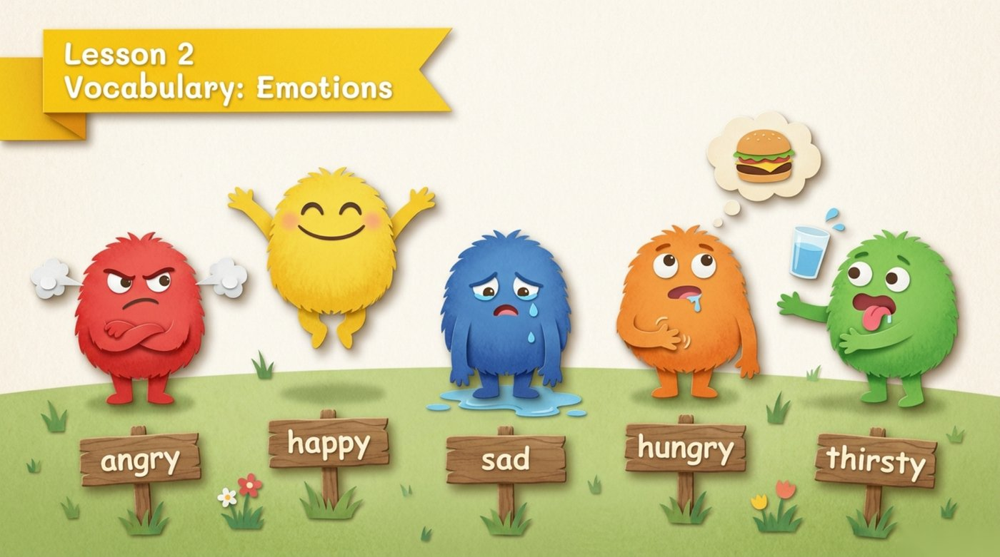
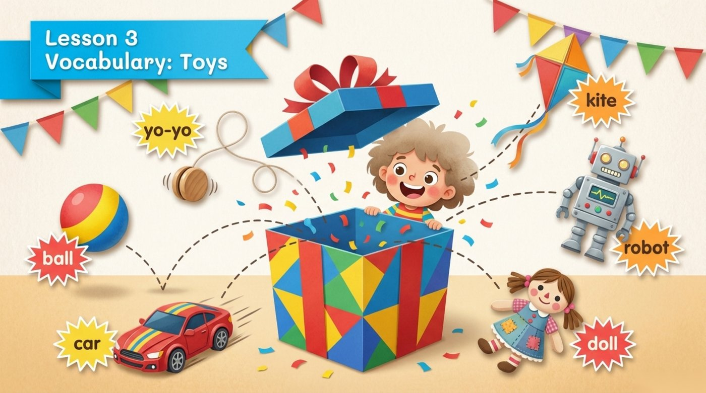
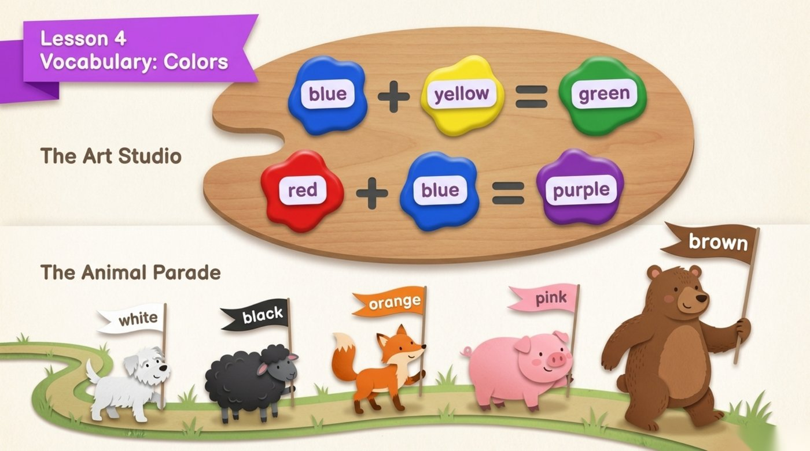

雙語魔法屋English Magic House
每週一點英文，累積成大大的自信
單字和句子雙管齊下，用生活化的方式練習英文。
本月品格單字Monthly Character Word
品格單字回顧Word history
本週一句Sentence of the Week
每週一句回顧Sentence history
第一課：Numbers 1-12

- one (1)
- two (2)
- three (3)
- four (4)
- five (5)
- six (6)
- seven (7)
- eight (8)
- nine (9)
- ten (10)
- eleven (11)
- twelve (12)
第二課：Emotions

- angry
- happy
- sad
- hungry
- thirsty
第三課：Toys

- yo-yo
- kite
- ball
- car
- robot
- doll
第四課：Colors

- blue
- yellow
- green
- red
- purple
- white
- black
- orange
- pink
- brown